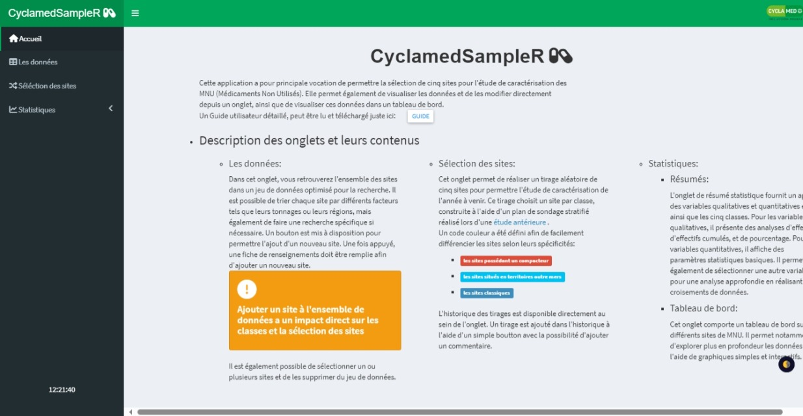
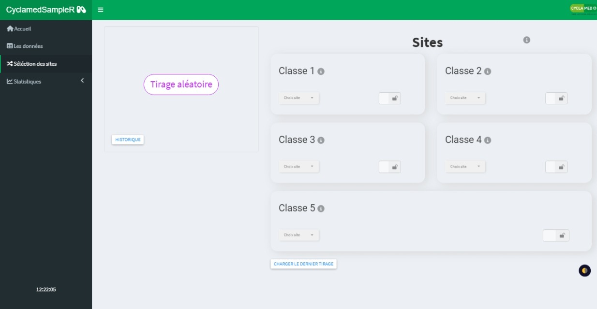
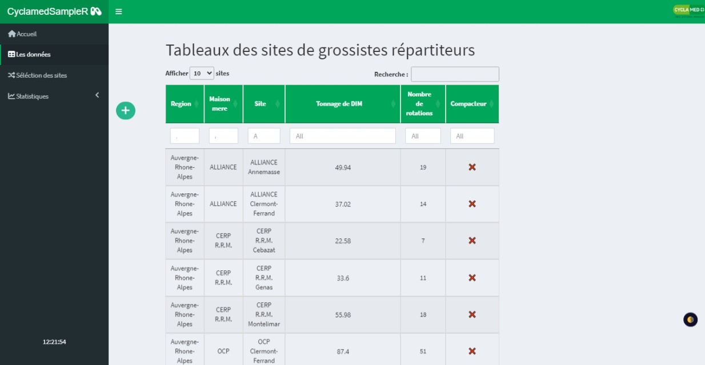
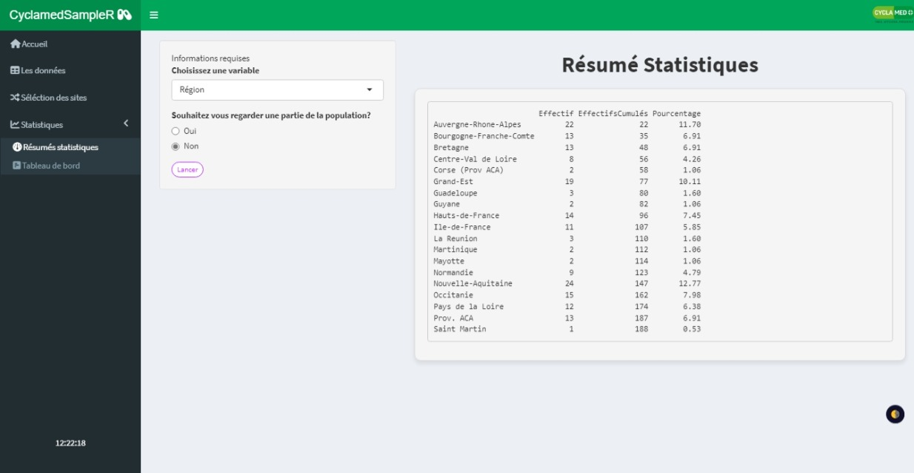
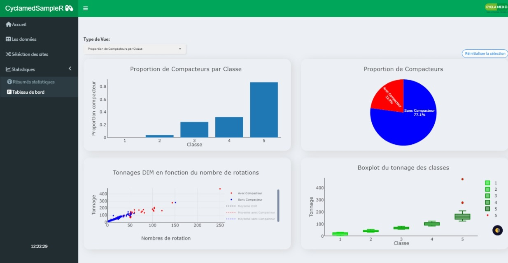

Cyclamed – Application Shiny pour optimiser la caractérisation des MNU
Contexte
Cyclamed est l’éco-organisme en charge de la gestion des Médicaments Non Utilisés (MNU) en France.
Dans ce cadre, Cyclamed réalise chaque année une étude de caractérisation des déchets afin d’identifier et de quantifier les composantes spécifiques contenues dans les Déchets Issus des Médicaments (DIM).
Cette étude a permis de définir une méthode d’échantillonnage, qui doit être appliquée et mise à jour chaque année en fonction de l’évolution des sites et des volumes collectés.
Objectifs du projet
Le projet consistait à développer une application Shiny répondant à plusieurs objectifs opérationnels.
1. Automatiser la méthode d’échantillonnage
Le premier objectif était de faciliter la mise en œuvre de la méthode d’échantillonnage définie lors de l’étude de caractérisation, en automatisant son application annuelle. L’outil devait permettre de reproduire la méthodologie de manière fiable, tout en limitant les interventions manuelles et les risques d’erreur.
2. Visualiser et mettre à jour les données
Le second objectif était de proposer un jeu de données interactif et visuel, permettant :
d’explorer les données de caractérisation,
de les modifier annuellement
de prendre en compte les évolutions du terrain (ajout, suppression ou modification de sites de stockage).
Cette fonctionnalité a été mise en œuvre à l’aide du package DT, offrant une manipulation intuitive des données.
3. Faciliter la prise de décision via un tableau de bord
Enfin, l’application devait fournir une vue d’ensemble des données à travers un tableau de bord synthétique, afin d’aider les équipes de Cyclamed à :
- suivre la répartition des tonnages de DIM par sites
- analyser les volumes collectés
- appuyer les décisions liées à la caractérisation annuelle.
Le tableau de bord constitue ainsi un outil phare pour permettre une vision globale des données et l’aide à la décision.
Besoins utilisateurs
L’application devait répondre aux besoins fonctionnels suivants :
Mettre à jour la liste des cinq sites de grossistes-répartiteurs à caractériser.
Redéfinir les fourchettes de tonnages récupérés par site, pour chaque classe de grossistes-répartiteurs.
Disposer de la liste des sites par classe.
Relancer la sélection aléatoire des sites en outre-mer et des sites équipés de compacteurs.
Compétences développées
Programmation R avancée
Développement d’une application interactive avec Shiny, structurée à l’aide du frameworkgolem.
L’utilisation degolema permis de concevoir une application plus robuste, maintenable et sécurisée, en séparant clairement la logique métier, l’interface utilisateur et les traitements, et en facilitant le portage et les mises à jour annuelles.Data visualisation avancée
Conception de visualisations statistiques avecggplot2etplotly, intégrant des graphiques interactifs et des interactions entre visualisations pour faciliter l’exploration et l’analyse des données.Développement web pour applications data
Utilisation de HTML, SCSS et JavaScript pour améliorer l’ergonomie, l’esthétique et la réactivité de l’application, et proposer une interface utilisateur adaptée à un usage opérationnel.
Aperçu de l’application
L’application Shiny développée pour Cyclamed permet de gérer la caractérisation annuelle des déchets issus des médicaments (DIM) de manière interactive et intuitive.
Voici les principales fonctionnalités à travers des captures d’écran :
1. Accueil

Page d’accueil avec navigation principale vers les différentes sections de l’application.2. Sélection des sites

Sélection interactive des sites à caractériser, avec possibilité de mettre à jour la liste et de relancer la sélection aléatoire. Un historique des séléctions est également disponible.3. Données

Tableau interactif (package DT) permettant de visualiser, modifier et enrichir les données.4. Résumé des données

Vue synthétique des informations clés : tonnages, répartition par site et par classe de grossiste-répartiteur.5. Visualisation

Graphiques interactifs permettant l’exploration visuelle et l’analyse des tendances et indicateurs clés.Cette interface interactive permet à Cyclamed de suivre, analyser et prendre des décisions rapidement, tout en automatisant la séléction de sites et en garantissant la fiabilité de la caractérisation annuelle.
Note de confidentialité
Les données utilisées dans le cadre de ce projet ainsi que les chiffres présentés sont confidentiels.
La description se concentre volontairement sur les méthodes, les outils et les compétences mobilisées, plutôt que sur les résultats chiffrés.